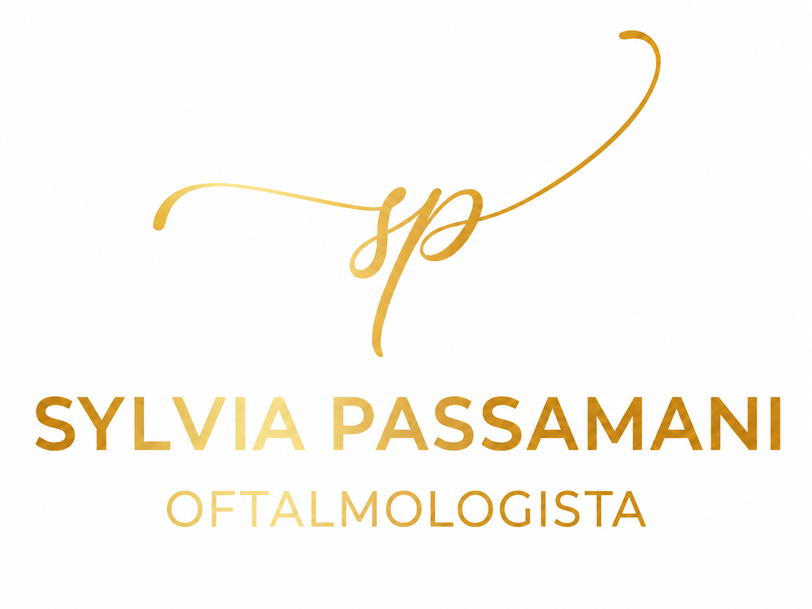
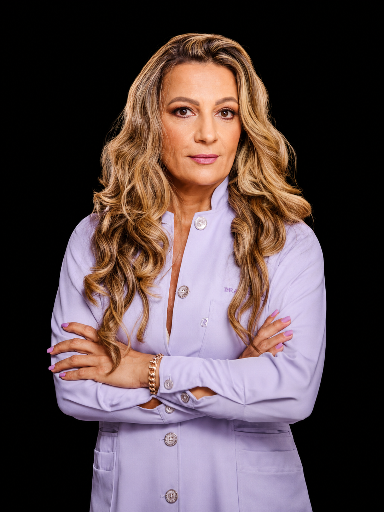
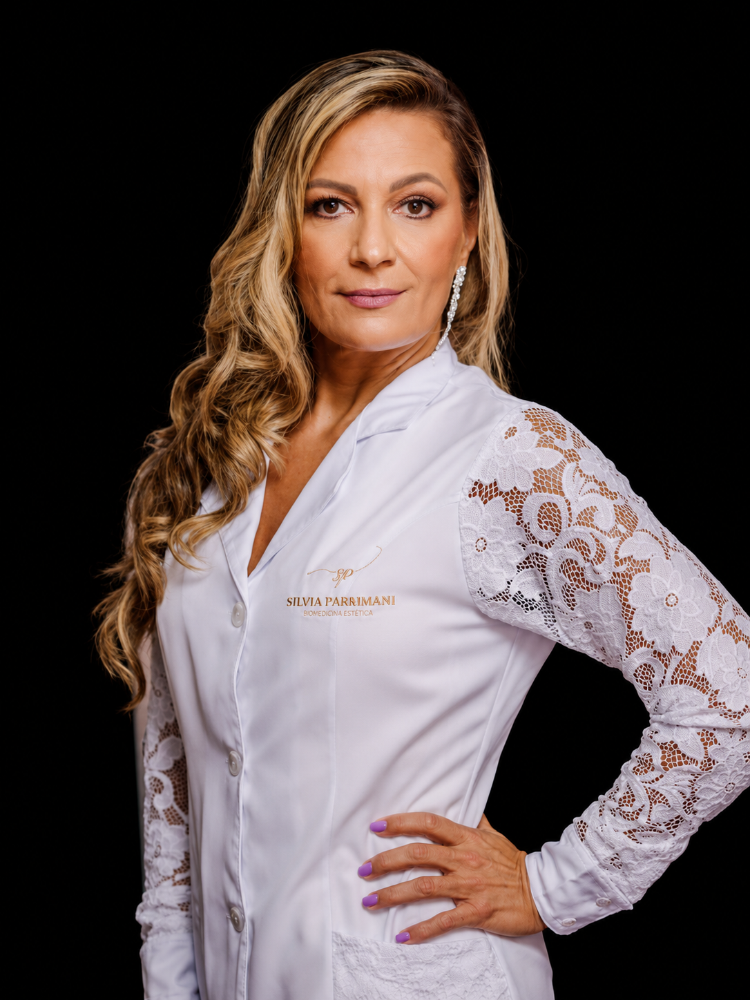

Consulta oftalmológica
Avaliação cuidadosa para entender sua saúde ocular e orientar o melhor acompanhamento.
Agendar avaliação
Dra. Sylvia Passamani OftalmologistaOftalmologia em Vitória/ES
Agende sua consulta com a Dra. Sylvia Passamani e cuide da sua visão com uma especialista em oftalmologia.
Cuidamos da saúde dos seus olhos com atenção, carinho e excelência, em um atendimento humanizado, com agendamento facilitado e acompanhamento próximo.

Atendimento oftalmológico
Opções informadas pela clínica para orientar o agendamento inicial pelo WhatsApp.
Avaliação cuidadosa para entender sua saúde ocular e orientar o melhor acompanhamento.
Agendar avaliaçãoAcompanhamento regular para pacientes que precisam monitorar a saúde ocular com atenção contínua.
Agendar avaliaçãoOrientação para pacientes que usam ou desejam avaliar o uso de lentes de contato.
Agendar avaliaçãoAtendimento para dor forte nos olhos, perda súbita de visão, trauma ocular, olho vermelho ou secreção intensa.
Falar no WhatsAppSe você tem outra necessidade oftalmológica, fale com a equipe para receber a orientação adequada.
Agendar avaliaçãoPrevenção e cuidado
Muitos problemas de visão podem evoluir de forma silenciosa. O acompanhamento oftalmológico ajuda a identificar alterações, orientar cuidados e preservar sua qualidade de vida.

Sobre a médica
Dra. Sylvia Renata Passamani é médica oftalmologista formada pela EMESCAM em 1994, com mais de 20 anos de experiência e atuação em Vitória e região.
Atua em oftalmologia geral, oftalmopediatria, cirurgia de miopia e catarata, além de possuir especialização em medicina de tráfego. Seu atendimento é descrito pela clínica como humano, acolhedor, ético e focado na prevenção, diagnóstico e acompanhamento da saúde ocular.
Galeria
Veja alguns espaços previstos para registros reais do ambiente, da estrutura e dos cuidados oferecidos.
Agendamento pelo WhatsApp
Fale com o atendimento da clínica pelo WhatsApp e verifique os horários disponíveis para consulta com a Dra. Sylvia.
Localização
Rua Graciano Neves, 73. Centro - Vitória/ES.
Ed. Lea, sala 505. Em cima da loja O Boticário.
Entrada pela recepção do edifício, elevador à esquerda, 5º andar.
Agenda da médica
Horários informados pela clínica para consultas com a Dra. Sylvia Passamani.
Pausa de almoço: 12h às 14h. Agendamentos para o mesmo dia dependem de autorização do consultório.
Dúvidas frequentes
Você pode agendar diretamente pelo WhatsApp clicando em qualquer botão de agendamento da página.
Segundo as informações da clínica, o atendimento aceita Unimed e particular.
As opções informadas são consulta oftalmológica, acompanhamento de glaucoma, lentes de contato, urgência ocular e outro atendimento oftalmológico.
Sim. A clínica orienta levar receitas antigas, caso tenha. Pacientes que usam lentes de contato devem seguir a orientação de retirada antes da consulta.
Retorno depende do motivo. Conforme informado pela clínica, sem custo apenas até 30 dias da última consulta. Retorno de óculos precisa de avaliação prévia.
A clínica fica na Rua Graciano Neves, 73, Centro, Vitória/ES, Ed. Lea, sala 505.
Sim. O WhatsApp facilita o contato para agendamento, remarcação, cancelamento e dúvidas sobre o atendimento.
A clínica informou Pix, dinheiro, cartão de débito e cartão de crédito. Outras informações devem ser confirmadas com a equipe.
Entre em contato pelo WhatsApp e veja os horários disponíveis para cuidar da sua saúde ocular.
Agendar agora